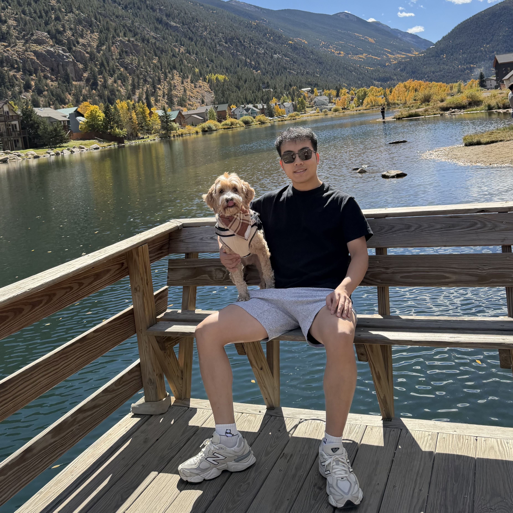

Biography
I am an Applied Scientist at Amazon Special Projects in Seattle. I received my Ph.D. in Computer Science from the University of Texas at Arlington in August 2026, advised by Prof. Junzhou Huang, and my M.S. in Software Engineering from UTA. My research focuses on multimodal foundation models, multimodal representation learning, and AI for computational biology and drug discovery.
News
- Sep 2026: Joined Amazon Special Projects in Seattle as an Applied Scientist.
- Aug 2026: Received my Ph.D. in Computer Science from UTA. Dissertation: AI for Life Sciences: From Geometric Protein Modeling to Multimodal Drug Design.
- May 2026: Started an Applied Scientist internship with Amazon Special Projects.
- 2026: Book chapter "Deep learning for B-cell epitope prediction and receptor–antigen binding prediction" published in Deep Learning in Drug Design.
- 2026: GRAM-DTI accepted to ICLR 2026.
- 2025: TRIDENT accepted to NeurIPS 2025 as a Spotlight.
Working Experience
Sep 2026 - Present
Applied Scientist
Amazon · Special Projects · Seattle, WA
May 2026 - Aug 2026
Applied Scientist Intern
Amazon · Special Projects
May 2025 - Aug 2025
R&D Data Science & Digital Health DSAI Intern
Janssen Research & Development (Johnson & Johnson) · NJ, USA
- Developed multimodal large language models for molecular toxicity prediction and drug-target binding affinity prediction, integrating molecular structures with textual descriptions.
- Built and curated large-scale molecular datasets from PubChem for pre-training foundation models, achieving state-of-the-art performance on toxicity prediction benchmarks.
- Collaborated with cross-functional teams to deploy machine learning models for early-stage drug discovery pipelines.
- Recognition: Work selected as a team highlight showcase.
- Publications: 1 NeurIPS workshop poster, 1 ICML workshop paper, and 1 ICLR'26 main conference paper (GRAM-DTI).
Research Interests
- Multimodal Representation Learning and Cross-modal Alignment
- Multimodal Foundation Models and LLMs for Computational Biology and Drug Discovery
- Graph Neural Networks and Geometric Deep Learning
- Robust Learning under Data Imbalance
Selected Publications
Including ICLR, NeurIPS (Spotlight), ICCV, ECCV, AAAI, and journals. See Google Scholar for the full list.
- Feng Jiang, Amina Mollaysa, Hehuan Ma, Tommaso Mansi, Junzhou Huang, Mangal Prakash and Rui Liao, "GRAM-DTI: Adaptive Multimodal Representation Learning for Drug–Target Interaction Prediction", In Proc. of the 14th International Conference on Learning Representations, ICLR'26, 2026.
[Paper][Poster][Code]
Extends volume-based contrastive learning to four molecular and protein modalities, with adaptive modality dropout for drug–target interaction prediction. - Feng Jiang, Mangal Prakash, Hehuan Ma, Jianyuan Deng, Yuzhi Guo, Amina Mollaysa, Tommaso Mansi, Rui Liao and Junzhou Huang, "TRIDENT: Tri-Modal Molecular Representation Learning with Taxonomic Annotations and Local Correspondence", In Proc. of the 39th Annual Conference on Neural Information Processing Systems, NeurIPS'25, San Diego, CA, USA, December 2025. (Spotlight, 3% acceptance rate)
[Paper][Code]
Aligns molecular SMILES, text, and taxonomic functional annotations with a volume-based global objective and a substructure-level local objective; state-of-the-art on 11 molecular property prediction tasks. - Feng Jiang, Yuzhi Guo, Hehuan Ma, Saiyang Na, Weizhi An, Bing Song, Yi Han, Jean Gao, Tao Wang and Junzhou Huang, "AlphaEpi: Enhancing B Cell Epitope Prediction with AlphaFold 3", In Proc. of the 15th ACM Conference on Bioinformatics, Computational Biology, and Health Informatics, ACM BCB'24, Shenzhen, China, November 2024.
[Paper][Code]
Combines ESM-2 sequence features and AlphaFold 3 structures through a dynamic alignment module for B-cell epitope prediction. - Feng Jiang, Yuzhi Guo, Hehuan Ma, Saiyang Na, Wenliang Zhong, Yi Han, Tao Wang and Junzhou Huang, "GTE: A Graph Learning Framework for Prediction of T-Cell Receptors and Epitopes Binding Specificity", Briefings in Bioinformatics, Volume 25, Issue 4, July 2024.
[Paper][Code]
Models TCR–epitope binding as a graph topology learning problem with dynamic graph attention and deep AUC maximization. - Wenliang Zhong, Rob Barton, Weizhi An, Feng Jiang, Hehuan Ma, Yuzhi Guo, Abhishek Dan, Shioulin Sam, Karim Bouyarmane and Junzhou Huang, "Zero-Shot Composed Image Retrieval via Dual-Stream Instruction-Aware Distillation", In Proc. of the IEEE/CVF International Conference on Computer Vision, ICCV'25, Honolulu, Hawaii, USA, October 2025.
- Yuwei Miao, Yuzhi Guo, Hehuan Ma, Jingquan Yan, Feng Jiang, Rui Liao and Junzhou Huang, "GoBERT: Gene Ontology Graph Informed BERT for Universal Gene Function Prediction", In Proc. of the AAAI Conference on Artificial Intelligence, AAAI'25, Vol. 39, No. 1, pp. 622-630, April 2025.
- Weizhi An, Wenliang Zhong, Feng Jiang, Hehuan Ma and Junzhou Huang, "Causal Subgraphs and Information Bottlenecks: Redefining OOD Robustness in Graph Neural Networks", In Proc. of the 18th European Conference on Computer Vision, ECCV'24, Milan, Italy, October 2024.
- Saiyang Na, Yuzhi Guo, Feng Jiang, Hehuan Ma, Jean Gao and Junzhou Huang, "Segment Any Cell: A SAM-Based Auto-Prompting Fine-Tuning Framework for Nuclei Segmentation", IEEE Transactions on Neural Networks and Learning Systems, Volume 36, Issue 12, pp. 19986-19995, December 2025.
- Hehuan Ma, Feng Jiang, Yuzhi Guo and Junzhou Huang, "Toward Robust Self-Training Paradigm for Molecular Prediction Tasks", Journal of Computational Biology, Volume 31, Issue 3, pp. 213-228, March 2024.
- Hehuan Ma, Feng Jiang, Yu Rong, Yuzhi Guo and Junzhou Huang, "Robust Self-training Strategy for Various Molecular Biology Prediction Tasks", In Proc. of the 13th ACM International Conference on Bioinformatics, Computational Biology and Health Informatics, ACM BCB'22, Chicago, Illinois, USA, August 2022.
Book Chapter
- Feng Jiang and Junzhou Huang, "Deep learning for B-cell epitope prediction and receptor–antigen binding prediction", In Deep Learning in Drug Design, Elsevier, pp. 403-423, 2026.
Dissertation
- Feng Jiang, "AI for Life Sciences: From Geometric Protein Modeling to Multimodal Drug Design", Ph.D. Dissertation, The University of Texas at Arlington, August 2026.
Other Research Projects
- LLaPA: A multimodal LLM for protein function prediction that aligns UniProt protein sequences with functional descriptions through contrastive learning, supporting protein-text retrieval and generation of both sequences and functional descriptions.
- Toxmm: A multimodal molecular embedding model for toxicity prediction, pre-trained on over 50,000 SMILES-text pairs curated from PubChem.
- Disentangled multimodal alignment: A framework that separates modality-specific and modality-invariant features to improve interpretability and generalization on molecular property prediction.
Honors
- NeurIPS 2025 Spotlight (TRIDENT)
- John S. Schuchman Outstanding Doctoral Student Award, UTA (April 2023)
Teaching Experience
Graduate Teaching Assistant, University of Texas at Arlington
- CSE 6324 Advanced Topics in Software Engineering (Fall 2022 - Fall 2024, 6 semesters)
- CSE 5325 Software Engineering II: Management, Maintenance, and QA (Fall 2022)
- CSE 3314 Professional Practices (Summer 2024)